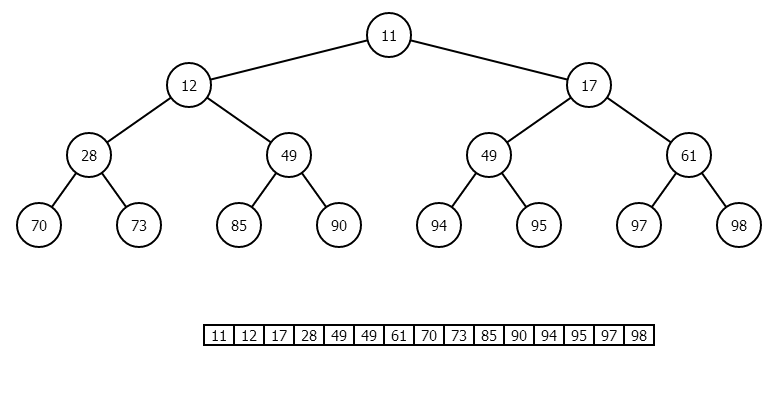

Heap Sort
Definition
Heap sort was invented by J.R.J. Williams. It is a comparison sorting algorithm. Heap sort sorts a variation of elements by implementing them in a binary tree format, which in this case is referred to as the heap. It sorts the elements by interchanging the root node with right most value in the heap. The heap is completely balanced once no child node has a value that is greater than the value of its parent node.
Implementation
Heap sort works as follows:
- Remove the root node and replace it with the rightmost node.
- Store parent node in a corresponding array.
- Restore the heap.
- Reapeat the above steps until all elements in the heap are sorted.
Example
Functions
Heap Sort is implemented by the following functions
- max_Heap();
- build_Heap();
- heap_Sort();
This function converts the heap, represented as a tree, into a maximum heap. It traverses the tree beginning at the indexed node to the leaves. Each time the function compares the parent node with the corresponding left and right children nodes, the maximum of the nodes takes the position of the parent node.
This function calls the max_Heap() function for all non-leaf nodes. When the function returns, the corresponding array successfully becomes a max-heap.
This function calls the build_Heap() function on the corresponding array. When the build_Heap() function is complete, the maximum element of the heap is replaced by the last element of the heap. The max_Heap() function is called from the root node. This process is continued until the heap contains no elements and the corresponding array is sorted.
function max_Heap ( array arr, integer, size ) left = 2 * left + 1 right = 2 * right + 2 if left < size && arr[left] > arr[integer] max = left else max = integer if right < size && arr[right] > arr[max] max = right if max != integer swap ( integer, max ) max_Heap ( max, size ) function build_Heap ( array arr, size ) for half size to 0 max_Heap ( arr, index, size ) function heap_Sort ( array arr, size ) build_Heap ( arr, size ) for size to 0 swap ( index, 0 ) decrement size max_Heap ( arr, 0, size )
Complexity
The optimal time complexity of heap sort is O(N log N), which is also its worst and average time complexity. Heap sort has a space complexity of O(1). Heap sort suffers from poor stability and is therefore considered to be an unstable algorithm.
Advantages of Heap Sort
Heap sort is one of the fastest sorting algorithms created.
Heap sort does not use recursion, thus limiting the complexity range required.
The sorting process computes equally fast for any input order.
This is primarily the reason why the best, average and worst time complexities are all the same.
Due to no recursion being implemented for heap sort, many developers consider it to be faster than Quicksort and other algorithms, in certain circumstances.
In situations where timing is essential, heap sort is the optimal choice of algorithms.
Disadvantages of Heap Sort
Heap sort and Quicksort are considered to be the main competitors of fastest sorting algorithms. However, due to Quicksort possessing a better locality of reference, it is primarily chosen as the optimal sorting algorithm. The possibility of correct values being close together is usually taken into consideration and therefore Quicksort is regarded as the best choice, as it is faster than heap sort in that situation.